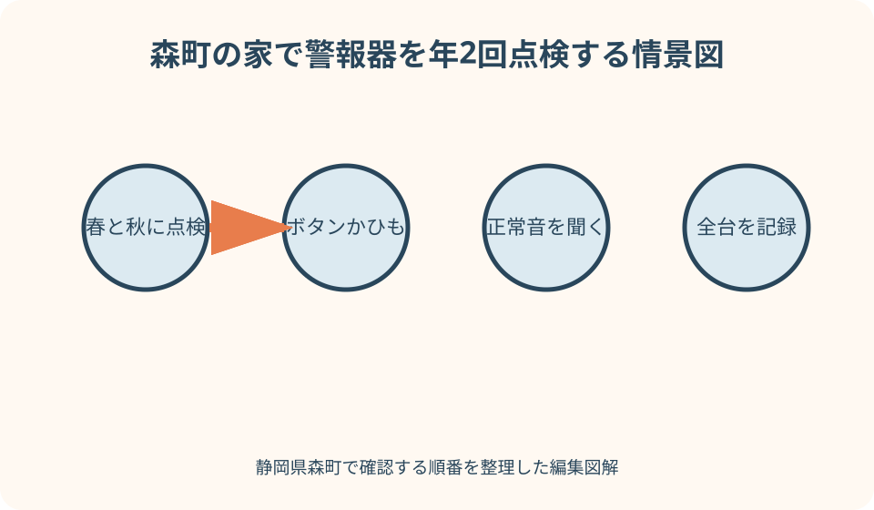
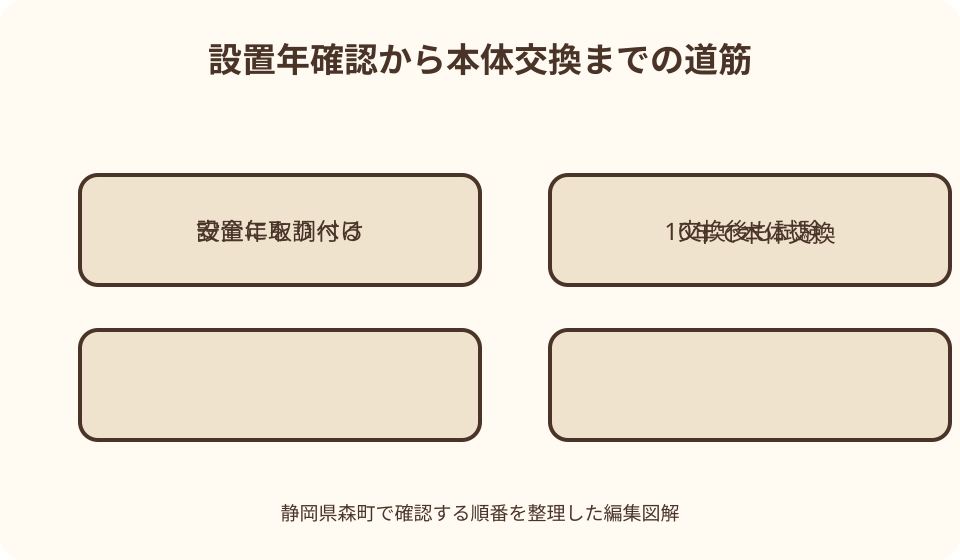

防災・家族の備え｜最終確認 2026-08-10
静岡県森町の住宅用火災警報器点検｜年2回の作動確認と10年交換
天井に付いているから安心、電池を替えたからまだ使える、とは限りません。森町は住宅用火災警報器を年2回点検し、反応しない場合や設置から10年以上の場合は本体を交換するよう案内しています。家中の台数を数え、音を聞き、製造年と交換日を残すところまでが点検です。

編集イラスト結論：春と秋の年2回、全台を同じ日に点検する
森町の令和8年2月広報は、春季全国火災予防運動の機会に住宅用火災警報器を点検し、年2回確認するよう案内しています。春と秋など覚えやすい月を決め、寝室、階段、台所付近など家にある全台を同じ日に確認します。
点検方法は機種の説明書を優先します。森町の案内では、本体のボタンを押すか付属のひもを引き、正常を知らせる音声や警報音が鳴るかを聞きます。反応しない機器を「後で見る」と残さず、使用を止めて交換へ進みます。
正常に鳴っても、設置から10年以上なら交換対象として扱います。森町の専用案内は、古くなると電子部品の寿命や電池切れで火災を感知しなくなることがあり、電池だけを替えても他部品の劣化が考えられるため、本体交換を勧めています。
点検は音を鳴らして終わりではありません。設置場所、製造年または設置年、作動結果、交換予定日、家族が音を聞き取れたかを一覧へ残します。次の年2回点検日を決めれば、実家や離れの機器も忘れにくくなります。
森町の一次情報で分かる義務化時期と交換の目安
森町公式の「住宅用火災警報器の交換について」は、森町・袋井市では平成18年6月に新築住宅への設置が義務となり、平成21年6月に猶予期間が終わって既存住宅を含む全住宅に設置が必要になったと説明しています。
既存住宅の義務化からすでに10年以上が経過しています。当時に取り付けたままなら、見た目がきれいでも本体交換の目安を超えています。設置年月が不明な機器は、本体の製造年表示、購入記録、住宅引渡書類を確認します。
令和8年2月の広報も、設置から10年以上の機器を交換し、ボタンやひもの作動確認に反応しない場合はすぐ交換するよう案内しています。問い合わせ先として袋井消防署森分署と役場危機管理課危機管理係を掲載しています。
森町公式の消防ページには、住宅用火災警報器の交換案内に加え、袋井消防本部による取り付け支援への入口があります。支援には条件や申込み方法があるため、利用を考える場合はリンク先の最新情報を読み、対象を確認します。
総務省消防庁も、住宅用火災警報器は常に火災を感知できるよう作動しており、定期的な作動確認と設置後10年を目安にした交換を勧めています。森町の案内と国の基本情報は、この二点で一致しています。
最初に全台の場所を探し、設置漏れと見落としを分ける
玄関から部屋を一つずつ回り、天井と壁上部を見て警報器の位置を間取り図へ記します。寝室として使う和室、二階の階段、離れ、増築部屋など、生活の変化で用途が変わった場所を見落とさないようにします。
警報器に似た機器として、ガス警報器、一酸化炭素警報器、センサー、集合住宅の自動火災報知設備があります。外観だけで決めず、本体表示と説明書で種類を確かめます。それぞれ点検方法や交換時期が同じとは限りません。
設置場所の基準は住宅の階数、部屋用途、地域の条例で確認する必要があります。この記事の一覧だけで「十分」と判断せず、建築後の間取り変更や寝室の移動があれば、袋井消防本部予防課へ現在の設置場所を相談します。
空室にも以前の機器が残っている場合があります。寝室として使わなくなったから外してよいと自己判断せず、現状の用途と設置基準を確認します。必要な機器と不要になった機器を同じ記録表で区別します。

本体の製造年・設置日・型式を確認する
本体側面や裏面には製造年、型式、交換時期などが表示されている場合があります。天井から外す必要がある機種は、説明書で取り外し方を確認します。通電式や連動式を無理に引っ張らず、不明なら専門家へ依頼します。
設置日シールが読める場合は、その日から10年を計算します。設置日がなく製造年だけ分かる場合は、購入・工事記録と照合します。確実な設置年を確認できない古い機器は、型式と状態を消防またはメーカーへ伝えて交換判断を尋ねます。
一覧には「1階和室・メーカー名・型式・製造年・電池式」のように書きます。同じ家に複数メーカーが混在すると、点検音や電池切れ音が違います。取扱説明書のURLや問い合わせ番号も機器ごとに残します。
交換した日は本体へ油性ペン等で記す前に、メーカーが認める表示場所を確認します。本体の吸気口や感知部をふさがないよう注意し、台帳とスマートフォンの予定表にも次回点検日と10年後の交換目安を入れます。
作動確認は安全な足場と説明書を用意して行う
点検ボタンへ手が届かない場合、椅子や家具へ乗らず、安定した脚立を平らな床に置きます。可能なら家族がそばで支え、高齢者や一人暮らしの人は無理をせず、取り付け支援や専門業者へ相談します。
ひも付き機種では、強く引っ張り続けず説明書の方法で操作します。ボタン式も長押しか短押しかで動作が違う場合があります。音が出る前提を家族や近所へ伝え、乳幼児やペットが驚かない時間帯を選びます。
正常音が鳴ったら、聞こえた言葉や音の種類を記録します。単に音がしただけでなく、電池切れや故障を知らせる音ではないかを説明書と照合します。音声式では「正常です」などの案内を最後まで聞きます。
点検音が小さい、途切れる、いつもと違うと感じた場合は、電池だけの問題と決めつけません。本体の設置年、異常表示、説明書の故障診断を確認し、メーカーまたは消防へ相談します。
反応しないときは放置せず、本体交換まで空白を作らない
ボタンやひもで反応しない場合、まず説明書に沿って電池の状態や接続を確認します。ただし、森町は反応しない場合の速やかな交換を案内しています。設置から10年以上なら、電池交換だけで延命せず本体を交換します。
交換品を買う際は住宅用火災警報器であること、必要な感知方式、設置場所への適合、検定表示、取り付け方法を確認します。価格や外形だけで同じ物と判断せず、既存の連動機能がある場合は互換性をメーカーへ尋ねます。
交換まで数日かかる場合も、その部屋に警報器がない状態を当然にしません。販売店、メーカー、袋井消防本部へ早めに相談し、家族へ故障箇所を共有します。火気使用と就寝時の注意を高め、交換日を確定します。
古い警報器と交換品を同じ箱へ入れると取り違えます。取り外した本体へ「故障・廃棄待ち」と表示し、電池の処理方法と本体の分別は森町の最新のごみ案内およびメーカー説明で確認します。
10年を超えたら電池ではなく本体を交換する
住宅用火災警報器は、電池以外にも煙や熱を感知する部品、音を出す部品、電子回路を備えています。森町公式は、電池を替えても他部品の劣化が考えられるため、10年を目安に本体交換を勧めています。
設置10年は、必ず10年間正常に動くという保証期間ではありません。異常音、故障表示、破損、著しい汚れがあれば年数を待たず、説明書に従って交換します。逆に10年を超えて作動音が鳴っても、交換を先延ばしにしません。
複数台を同じ時期に設置した家は、一台だけ電池切れを起こした時点で他の機器も設置年を確認します。交換年がそろえば管理しやすい一方、必要な感知方式や連動機能を確認せず一括購入することは避けます。
本体交換後は、取り付けただけで終わらず作動確認を行います。設置場所、向き、固定の緩み、包装材の外し忘れを確認し、新しい正常音を家族全員で聞きます。
ほこりと汚れは機種に合う方法で手入れする
警報器の周囲へほこりや虫がたまると、誤作動や感知への影響が心配されます。掃除の前に説明書を読み、電源や取り外しに関する注意を確認します。掃除機を直接強く当てるなど自己流の作業は避けます。
町サイト掲載の保安協だよりでは、家庭用中性洗剤を含ませて十分絞った布で軽く拭く例を示し、ベンジン、シンナーなどの有機溶剤や水洗いを避けるよう案内しています。ただし機種によって異なるため説明書を優先します。
天井や高い壁での清掃は転落事故の危険があります。警報器周辺のくもの巣が気になっても、長い棒で本体を突かず、安定した足場と二人作業を用意します。自分で難しければ点検支援を相談します。
清掃後は、本体が確実に元の台座へ付いているかを確認し、作動試験を行います。取り外し式の電池を抜いたまま、電源コネクターを差し忘れたままにしないよう、作業前後を二人で読み合わせます。
音を聞き取りにくい家族と夜間避難まで考える
高齢者や聴覚に不安のある人が、別室の警報音を聞き取れるとは限りません。点検時に寝室の扉を閉め、普段寝る位置から音が分かるかを本人と確認します。聞こえにくい場合は、連動型や光で知らせる補助装置を消防・メーカーへ相談します。
連動型は一台が感知すると他の部屋でも知らせる製品があります。交換時は既存機器との組合せ、通信範囲、登録方法を確認します。連動機能があるつもりで実際には未登録、という状態を避けるため全台試験します。
警報を聞いた後の行動も家族で決めます。火や煙を確かめるために危険な部屋へ戻らず、まず安全な出口へ避難し、119番通報します。初期消火は安全に行える範囲に限り、避難経路を失う前に退避します。
夜間は停電や煙で床の物が見えにくくなります。寝室から玄関までの通路を片付け、手の届く場所へ照明と靴を置きます。警報器の点検日を、避難経路と消火器の場所も確かめる日にします。

実家・空き家・賃貸住宅では管理者を明確にする
遠方の実家は、設置当時の家族しか交換年を知らないことがあります。帰省日に全台を撮影し、本体表示、部屋名、作動結果を家族の共有表へ入れます。電話で「鳴った」と聞くだけでなく、どの機器を試したかを特定します。
空き家状態でも、家族、管理業者、工事業者が入るなら火災の危険はなくなりません。電気や火気の使用状況、住宅用火災警報器の設置義務と維持について、建物の所在地を管轄する消防へ確認します。
賃貸住宅では、警報器が建物設備か入居者が設置した物かを契約書と管理者へ確認します。故障時に勝手に外して放置せず、連絡先と交換担当を明確にします。電池切れ音を止めるためだけに本体を外さないことが大切です。
売買や相続で管理者が変わる場合、警報器台帳も鍵や設備説明書と一緒に引き継ぎます。設置日が分からないこと自体を記録し、次の所有者や利用者が早めに交換判断できるようにします。
良い点：数分の点検で故障と交換忘れを見つけられる
住宅用火災警報器点検の良い点は、ボタンまたはひもを使う短い確認で、電池切れや本体異常の手掛かりを得られることです。火災が起きて初めて故障に気付く事態を避けるため、平常時に試せます。
年2回と決めれば、春・秋の火災予防運動や家族の予定に合わせて習慣化できます。設置年も一緒に見ることで、作動音が鳴る古い機器を交換対象として見つけられます。
全台を一覧にすると、警報器のない寝室、連動していない離れ、聞こえにくい部屋など、単体点検では見えない問題が分かります。住宅の使い方が変わったときにも配置を再確認できます。
点検日に避難動線、消火器、コンセント、ストーブ周辺も見ると、発見、通報、避難、初期消火の備えを一つにつなげられます。警報器だけへ安全を任せず、火災を起こさない習慣も見直せます。
注文したい点：作動音だけでは感知性能を完全に証明できない
注文したい点は、ボタン試験で音が鳴ることが、実際の煙や熱を必ず適切に感知する完全な証明ではないことです。だからこそ説明書の点検方法、異常表示、10年交換を組み合わせます。
設置場所は住宅ごとの部屋用途と条例に関わります。全国向けの図だけを見て森町の自宅も十分だと決めず、増改築や寝室変更があれば袋井消防本部へ確認したいところです。
高所にあるため、高齢者が自分で点検しにくい問題もあります。椅子へ乗る危険を取らず、家族や地域の支援、袋井消防本部の取り付け支援、専門業者の利用条件を確認します。
本体交換には購入費と廃棄の手間が生じますが、電池だけ替えて先延ばしにすることは勧められません。複数台の更新時期を表へ並べ、同じ年に集中する場合は計画的に予算を分けます。
代案・結論：高所作業が難しければ支援先へつなぐ
自分で点検ボタンへ届かない場合は、危険な足場を作らず、同居家族や近隣家族へ依頼します。それも難しければ、森町消防ページから袋井消防本部の取り付け支援案内を開き、対象条件と申込み方法を確認します。
設置年が分からないときは、本体の製造年、型式、住宅取得時の書類を調べます。確定できなければ、写真と型式を用意してメーカーや袋井消防本部へ相談し、古さが疑われる機器は交換を前提に扱います。
交換品をすぐ用意できない場合も、故障した本体を元へ戻して正常と思い込まないよう表示します。家族へ未設置状態を共有し、交換日を決め、火気と就寝場所を見直します。
結論として、今日行うのは全台を間取り図へ書き、ボタンまたはひもで作動確認し、設置年が10年以上・不明・反応なしの機器へ印を付けることです。その一覧が、買替えや相談を迷わず進める土台になります。
家族に残す警報器台帳
台帳の項目は、建物名、部屋名、設置位置、感知方式、メーカー、型式、製造年、設置日、電源方式です。警報器の正面と表示面を撮影し、写真名に部屋名を入れます。
点検日ごとに、正常音、異常音、無反応、本体汚れ、固定の緩みを記録します。「問題なし」だけでは次の人が何を確認したか分かりません。操作した人の名前と次回点検月も残します。
交換したら、旧機器の設置年と撤去日、新機器の型式と設置日、購入先、説明書の保管場所を追記します。連動型は接続確認の結果も書き、全台が鳴ったかを記録します。
問い合わせ先として袋井消防本部予防課、袋井消防署森分署、役場危機管理課、各メーカーを役割別に記します。緊急の火災通報は119番であり、平常時の設備相談先と混ぜません。
大石の視点：実家の警報器は建物管理の更新日になる
大石の視点では、住宅用火災警報器の点検日は、実家全体を見回す良いきっかけです。天井の雨染み、分電盤、コンセントのほこり、暖房器具周辺、避難経路を同じ日に確認すると、設備の小さな変化を記録できます。
遠方の家族が管理する住宅では、警報器の音が鳴ったという口頭報告だけで終えず、写真、型式、設置年、点検日を実家カルテへ残します。管理する人が変わっても、10年交換の起点を引き継げます。
空き家や相続した家をすぐ売ると決めていなくても、道路、境界、農地、登記名義、電気・水道とともに防火設備の状態を整理する価値があります。家へ入る家族や業者の安全にも関わります。
私は、警報器を新品にしただけで建物全体が安全になったとは考えません。火気、配線、避難動線、建物の傷み、近隣への連絡まで順に見ます。住み続ける、貸す、売る、管理する、どの選択にも使える記録にしてください。
まとめ：音・年数・配置の三つを同時に確かめる
静岡県森町の住宅用火災警報器は、本体ボタンを押すか付属のひもを引き、正常音が鳴るかを年2回確認します。反応しない場合は放置せず交換します。
正常に鳴っても、設置から10年以上なら本体を交換します。電池を替えても電子部品など他部品の劣化は残るためです。設置年が不明な機器も、型式と製造年を調べて相談します。
全台の場所、種類、作動結果を一覧にし、寝室の変更、離れ、聞こえにくい家族、連動機能も確認します。高所作業は無理をせず、取り付け支援や専門家へつなぎます。
まず春と秋の点検日を家族の予定へ登録し、今日一台のボタンを押してください。次に家中の台数を数え、10年以上・不明・無反応の機器を交換一覧へ移すと、実行できる防火点検になります。
公式情報・確認先
掲載内容は次の一次情報を基礎に整理しました。営業、料金、催し、交通は変わるため、出発前または手続き前にリンク先で最新情報を確認してください。
- 住宅用火災警報器の交換について（静岡県森町、2026-08-10確認）
- 広報もりまち 令和8年2月号（静岡県森町、2026-08-10確認）
- 消防（静岡県森町、2026-08-10確認）
- 住宅用火災警報器を設置しましょう！（総務省消防庁、2026-08-10確認）
- 住宅用火災警報器Q&A（総務省消防庁、2026-08-10確認）